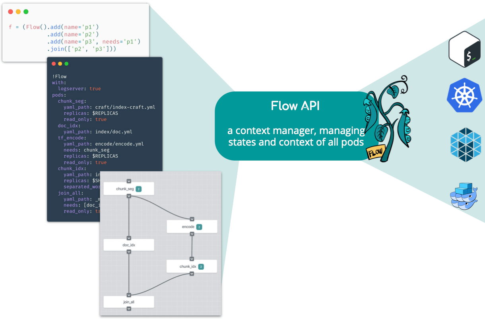

Using Flow API to Compose Your Jina Workflow¶
In search systems, tasks such as indexing often involve multiple steps: preprocessing, encoding, storing, etc. In Jina’s architecture, each step is implemented by an Executor and wrapped by a Pod. This microservice design makes the whole pipeline flexible and scalable. Accomplishing a task is then orchestrating all these Pods to work together, either sequentially or in parallel; locally or remotely.
The Flow API is a context manager for Pods. Each Flow object corresponds to a real-world task. It helps the user to manage the states and contexts of all Pods required in that task. The Flow API translates a workflow defined in Python code, YAML file, or interactive graph to a runtime backed by multi-thread/process, Kubernetes, Docker Swarm, etc. Users don’t need to worry about where the Pod is running or how the Pods are connected.

Use Flow API in Python¶
Create a Flow¶
To create a new Flow:
from jina.flow import Flow
f = Flow()
Flow() accepts some arguments, see jina flow --help or our documentation for details. For example, Flow(log_server=True) will enable sending logs to the dashboard.
When the arguments given to Flow() cannot be parsed, they are propagated to all the Flow’s Pods for parsing (if they are accepted, see jina pod --help for the list of arguments). For example:
f = Flow(read_only=True)
will set the read_only attribute of all Pods in f to True.
Add Pod into the Flow¶
To add a Pod to the Flow, simply call .add():
f = (Flow().add(name='p1', uses='mypod1.yml')
.add(name='p2', uses='mypod2.yml', timeout_ready=50000)
.add(name='p3', uses='mypod3.yml', read_only=True))
This will create a sequential workflow:
gateway -> p1 -> p2 -> p3 -> gateway
The input of each Pod is the output of the last Pod in sequential order. The gateway is the entrypoint of the whole Jina network. The gateway Pod is automatically added to every Flow, of which the output is the first Pod and the input is the last Pod defined in the Flow.
All accepted arguments follow the command line interface of Pod, which can be found in jina pod --help. Just remember to replace the dash - to underscore _ in the name of the argument when referring to it in Python.
Besides the file path, in Flow API uses can accept other types:
| Type | Example | Remark |
|---|---|---|
| YAML file path | crafter/my.yml |
|
| Inline YAML | '!DataURICrafter\nwith: {mimetype: png}' |
don't forget ! in the beginning |
| The name of an executor listed here | TransformerTorchEncoder |
only the executors that have full default values can be directly used |
| Built-in simple executors listed here | _clear |
Always starts with _ |
Add a Containerized Pod into the Flow
To run a Pod in a Docker container, simply specify the image argument:
f = (Flow().add(name='p1')
.add(name='p2', image='jinaai/hub.executors.encoders.bidaf:latest')
.add(name='p3'))
This will run p2 in a Docker container equipped with the image jinaai/hub.executors.encoders.bidaf:latest. More information on using containerized Pod can be found in our documentation.
Add a Remote Pod into the Flow¶
To run a Pod remotely, simply specify the host and port_expose arguments. For example:
f = (Flow().add(name='p1')
.add(name='p2', host='192.168.0.100', port_expose=53100)
.add(name='p3'))
This will start p2 remotely on 192.168.0.100, whereas p1 and p3 run locally.
To use remote Pods, you need to start a gateway on 192.168.0.100 in advance. More information on using remote Pods can be found in our documentation.
Add a Remote Containerized Pod into the Flow¶
A very useful pattern is to combine the above two features together:
f = (Flow().add(name='p1')
.add(name='p2', host='192.168.0.100', port_expose=53100,
image='jinaai/hub.executors.encoders.bidaf:latest')
.add(name='p3'))
This will start p2 remotely on 192.168.0.100 running a Docker container equipped with the image jinaai/hub.executors.encoders.bidaf:latest. Of course Docker is required on 192.168.0.100. More information on using remote Pods can be found in our documentation.
Parallelize the Steps¶
By default, if you keep adding .add() to a Flow, it will create a long chain of sequential workflow. You can parallelize some of the steps by using needs argument. For example,
f = (Flow().add(name='p1')
.add(name='p2')
.add(name='p3', needs='p1'))
This creates a workflow, where p2 and p3 work in parallel with the output of p1.
gateway -> p1 -> p2
|
-> p3 -> gateway
Waiting for Parallel Steps to Finish¶
In the prior example, the message is returned to the gateway regardless of the status of p2. To wait for multiple parallel steps to finish before continuing, you can do:
f = (Flow().add(name='p1')
.add(name='p2')
.add(name='p3', needs='p1')
.join(['p2', 'p3']))
which gives
gateway -> p1 -> p2 ->
| | -> wait until both done -> gateway
-> p3 ->
Run a Flow¶
To run a Flow, simply use the with keyword:
f = (Flow().add(...)
.add(...))
with f:
# the flow is now running
Though you can manually call the start() method to run the flow, you also need to call the corresponding close() method to release the resource. Using with saves you the trouble, as the resource is automatically released when running out of the scope.
Test Connectivity with Dry Run¶
You can test the whole workflow with dry_run(). For example:
with f:
f.dry_run()
This will send a ControRequest to all pods following the topology you defined. You can use it to test the connectivity of all pods.
Iterate over Pods in the Flow¶
You can iterate the Pods in a Flow like you would a list:
f = (Flow().add(...)
.add(...))
for p in f.build():
print(f'{p.name} in: {str(p.head_args.socket_in)} out: {str(p.head_args.socket_out)}')
Note f.build() will build the underlying network context but not run the Pods. It is very useful for debugging.
Feed Data to the Flow¶
You can use .index(), .search() to feed index data and search query to a Flow:
with f:
f.index(input_fn)
with f:
f.search(input_fn, top_k=50, output_fn=print)
input_fnis anIterator[bytes], each of which corresponds to the representation of a Document with bytes.output_fnis the callback function after each request, and takes aRequestprotobuf as its only input.
A simple input_fn is defined as follows:
def input_fn():
for _ in range(10):
yield b's'
# or ...
input_fn = (b's' for _ in range(10))
Please note that the current Flow API does not support using
index()andsearch()together in the samewithscope. This is because the workflow ofindex()andsearch()are usually different and you cannot use one workflow for both tasks.
Feed Data to the Flow from Other Clients¶
If you don’t use Python as a client, or your client and Flow are in different instances, you can keep a Flow running and use a client in another language to connect to it:
import threading
with f:
f.block()
Please check out our hello world in client-server architecture for a complete example.
WARNING: don’t use a while loop to do the waiting, it is extremely inefficient:
with f:
while True: # <- dont do that
pass # <- dont do that
Use Flow API in YAML¶
You can also write a Flow in YAML:
!Flow
with:
logserver: true
pods:
chunk_seg:
uses: craft/index-craft.yml
replicas: $REPLICAS
read_only: true
doc_idx:
uses: index/doc.yml
tf_encode:
uses: encode/encode.yml
needs: chunk_seg
replicas: $REPLICAS
read_only: true
chunk_idx:
uses: index/chunk.yml
replicas: $SHARDS
separated_workspace: true
join_all:
uses: _pass
needs: [doc_idx, chunk_idx]
read_only: true
You can use enviroment variables with $ in YAML. More information on the Flow YAML Schema can be found in our documentation.
Load a Flow from YAML¶
from jina.flow import Flow
f = Flow.load_config('myflow.yml')
Start a Flow Directly from the CLI¶
The following command will start a Flow from the console and hold it for a client to connect.
jina flow --yaml-path myflow.yml

Common Design Patterns¶
Jina is a really flexible AI-powered neural search framework and is designed to enable any pattern that can be framed as a neural search problem. However, there are basic common patterns that show up when developing search solutions with Jina:
CompoundIndexer (Vector + KV Indexers)¶
For neural search applications, it helps to use a CompoundIndexer in the same Pod for both the index and query Flows. The following YAML file shows an example of this pattern:
!CompoundIndexer
components:
- !NumpyIndexer
with:
index_filename: vectors.gz
metric: cosine
metas:
name: vecIndexer
- !BinaryPbIndexer
with:
index_filename: values.gz
metas:
name: kvIndexer # a customized name
metas:
name: complete indexer
The above YAML creates a Flow that:
Acts as a single indexer
Lets you seamlessly query the index with the embedding vector from any upstream encoder
Returns the binary information in the key-value index in the Pod’s response message.
The VectorIndexer:
Retrieves the most relevant Documents by finding similarities in the embedding space
Uses the key-value index to extract meaningful data and fields from those Documents
Text Document Segmentation¶
A common search pattern is storing long text documents in an index to retrieve them later using short sentences. A single embedding vector per long text document is not the proper way to do this: It makes it hard to extract a single semantically-meaningful vector from a long document. Jina solves this by introducing Chunks. The common scenario is to have a crafter segmenting the document into smaller parts (typically short sentences) followed by an NLP-based encoder.
!Sentencizer
with:
min_sent_len: 2
max_sent_len: 64
!TransformerTorchEncoder
with:
pooling_strategy: auto
pretrained_model_name_or_path: distilbert-base-cased
max_length: 96
This way a single document contains N different Chunks that are later independently encoded by a downstream encoder. This lets Jina query the index using a short sentence as input, where similarity search can be applied to find the most common Chunks. This way the same Document can be retrieved based on searching different parts of it.
For instance, a text document containing 3 sentences can be decomposed into 3 Chunks:
Someone is waiting at the bus stop. John looks surprised, his face seems familiar ->
[Someone is waiting at the bus stop, John looks surprised, his face seems familiar]
This lets us retrieve the Document from different input sentences that match any of these 3 parts. For instance, these 3 different inputs could lead to the extraction of the same document by targeting 3 different Chunks:
A standing guy -> Someone is waiting at the bus stop.
He is amazed` -> John looks surprised.
a similar look -> his face seems familiar.
Indexers at Different Depth Levels¶
In a configuration like the one for Text Document Segmentation, we need different levels of indexing. The system needs to keep the data related to the Chunks as well as the information of the original documents. This way:
The actual search is performed at the Chunk level following the
CompoundIndexerpattern.Then the Document indexer works as a final step to extract the actual Documents expected by the user.
To implement this, two common structures appear in index and query. In an index flow, these two indexers work in parallel:
The
chunk indexergets messages from anencoderThe
doc indexercan get the documents even from thegateway.
!Flow
pods:
encoder:
uses: BaseEncoder
chunk_indexer:
uses: CompoundIndexer
doc_indexer:
uses: BinaryPbIndexer
needs: gateway
join_all:
uses: _pass
needs: [doc_indexer, chunk_indexer]
However, at query time the Document and Chunk indexers work sequentially. Normally the Document would get messages from the Chunk indexer with a Chunk2DocRanker Pod in the middle of the Flow. The ranker would rank the Chunks by relevance and reduce the results to the parent IDs, enabling the doc indexer to extract the original Document’s binary information.
!Flow
encoder:
uses: BaseEncoder
chunk_indexer:
uses: CompoundIndexer
ranker:
uses: Chunk2DocRanker
doc_indexer:
uses: BinaryPbIndexer
Switch Vector Indexer at Query Time¶
Jina lets you decide which kind of vector index to use when exposing the system to be queried. Almost all of Jina’s advanced vector indexers inherit from BaseNumpyIndexer. These classes only override methods related to querying the index, but not the ones related to storing vectors, meaning they all store vectors in the same format. Jina takes advantage of this, and has the flexibility to offer the same vector data in different vector indexer types. To implement this functionality there are two things to consider, one for indexing and one for querying.
Indexing¶
At index time, we use NumpyIndexer. It is important that the Pod containing this Executor ensures read_only: False. This way, the same indexer can be reconstructed from binary form, which contains information of the vectors (dimensions, …) that are needed to have it work at query time.
!NumpyIndexer
with:
index_filename: 'vec.gz'
metas:
name: wrapidx
Querying¶
At query time, we use NumpyIndexer as ref_indexer for any advanced indexer inheriting from BaseNumpyIndexer (see AnnoyIndexer, FaissIndexer, …).
!FaissIndexer
with:
ref_indexer:
!NumpyIndexer
metas:
name: wrapidx
with:
index_filename: 'vec.gz'
In this case, this construction lets the FaissIndexer use the vectors stored by the indexer named wrapidx.
Override parameters using QuerySet¶
We can override parameter values in flows with the help of QuerySet. querySet is a set of QueryLang protobuf messages that can be sent along with any Request. It is useful to dynamically override parameters of a driver for a specific request. (Not every parameter is able to be overriden)
This QueryLang has 3 main fields:
name: A name of the driver that will be overriden (the exact class name). For now any driver in the Flow of this class will be affected by this
QueryLangparameters: A key-value map where the key is the parameter to be overriden and the value the value that it will be used in the request
priority: The priority this
QueryLanghas with respect to potential defaults of the driver.
For a driver to be able to override its parameters and read from the QueryLang messages it needs to do 2 things:
Implement
QuerySetReaderas amix-inclassDeclare the attribute with an underscore prefix, i.e (
self._top_kto havetop_kas an attribute with the potential to be overriden)
Suppose we want to override VectorSearchDriver's top_k value of 10 with 20 in the below pod. We can see that VectorSearchDriver fullfills the requirements:
class VectorSearchDriver(QuerySetReader, BaseSearchDriver):
def __init__(self, top_k: int = 50, fill_embedding: bool = False, *args, **kwargs):
super().__init__(*args, **kwargs)
...
self._top_k = top_k
...
The pod is defined as taking 10 for its top_k parameter in the VectorSearchDriver.
!CompoundIndexer
components:
- !NumpyIndexer
with:
index_filename: vec.gz
metric: cosine
metas:
name: vecidx
workspace: $JINA_DIR
- !BinaryPbIndexer
with:
index_filename: doc.gz
metas:
name: docidx
workspace: $JINA_DIR
metas:
name: chunk_indexer
workspace: $JINA_DIR
requests:
on:
IndexRequest:
- !VectorIndexDriver
with:
executor: vecidx
traversal_paths: ['r']
- !KVIndexDriver
with:
executor: docidx
traversal_paths: ['r']
[SearchRequest]:
- !VectorSearchDriver
with:
executor: vecidx
top_k: 10
traversal_paths: ['r']
- !KVSearchDriver
with:
executor: docidx
traversal_paths: ['m']
We construct a queryset top_k_queryset which defines to use a top_k value of 20 for VectorSearchDriver.
top_k_queryset = jina_pb2.QueryLang()
top_k_queryset.name = 'VectorSearchDriver'
top_k_queryset.priority = 1
top_k_queryset.parameters['top_k'] = 20
Passing top_k_queryset to flow.search will override top_k value of 10 with 20 in the VectorSearchDriver.
Note that more than one queryset can be passed with any request.
with Flow.load_config('flow.yml') as search_flow:
search_flow.search(input_fn=docs, output_fn=print_results, queryset=[top_k_queryset])
The Score Field¶
In ranking document matches, Jina uses several algorithms to compute the relevance of a document given a specific query. This is stored as a numeric value in the score field of a match, both at a document level and at the chunk level. This field can mean either “smaller is better” (distance) or “larger is better” (similarity, relevance).
As, an example, the NumpyIndexer uses k-NN (with various distance metrics) to calculate a distance, thus “smaller is better”. On the other hand, the MinRanker uses the function 1/(1+s) (where s is the min. score from all chunks) in order to “bubble up” the score from child chunks to the parent, thus “larger is better”. There can be other metrics too.
This can pe problematic when deciding how to sort the results from a query. Fortunately, Jina provides the name of the operator that has performed the scoring:
/**
* Represents the relevance model to `ref_id`
*/
message NamedScore {
float value = 1; // value
string op_name = 2; // the name of the operator/score function
...
}
Notice the field op_name in the above. As the comment suggests, this is the name of the operator that has performed the sorting (e.g. NumpyIndexer, or MinRanker). Based on this, the value field is either of type “smaller is better” or of type “larger is better”.
Conclusion: When sorting results, make sure you check the document.score.op_name in order to understand the direction of the score.